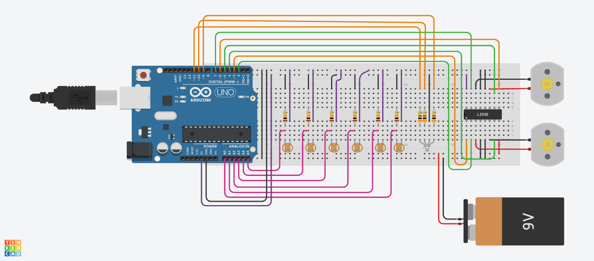

#define PININ1 2
#define PININ2 4
#define PININ3 5
#define PININ4 7
#define PINENA 3
#define PINENB 6
#define PINLEDR 11
#define PINLEDG 9
#define PINLEDB 10
#define SENSOR1 A0
#define SENSOR2 A1
#define SENSOR3 A2
#define SENSOR4 A3
#define SENSOR5 A4
#define SENSOR6 A5
#define TRESHOLD 512
#define SPEED0 255
#define SPEED1 210
#define SPEED2 180
#define SPEED3 150
#define SPEED4 100
#define SPEED5 0
#define SPEED6 0
#define SPEED7 100
#define RUNTIME 25000
void setup() {
Serial.begin(9600);
rgbControl(255, 0, 0, 1000);
rgbControl(0, 255, 0, 1000);
rgbControl(0, 0, 255, 1000);
}
void loop() {
if (Serial.available()) {
rgbControl(0, 0, 255, 1);
char dado = Serial.read();
if (dado == '8' || dado == '2' || dado == '4' ||
dado == '6' || dado == '0') {
motorOption(dado, 80, 80);
}
if (dado == 'z' || dado == 'x' || dado == 'y' ||
dado == 'a' || dado == 'b' || dado == 'c') {
advancedOption(dado);
}
} else {
rgbControl(0, 255, 0, 1);
}
followLineMEF();
readSensors();
}
void advancedOption(char option) {
switch (option) {
case 'a':
readSensors();
break;
case 'b':
followLineMEF();
break;
}
}
void motorControl(int speedLeft, int speedRight) {
pinMode(PININ1, OUTPUT);
pinMode(PININ2, OUTPUT);
pinMode(PININ3, OUTPUT);
pinMode(PININ4, OUTPUT);
pinMode(PINENA, OUTPUT);
pinMode(PINENB, OUTPUT);
if (speedLeft < 0) {
speedLeft = -speedLeft;
digitalWrite (PININ3, HIGH);
digitalWrite (PININ4, LOW);
} else {
digitalWrite (PININ3, LOW);
digitalWrite (PININ4, HIGH);
}
if (speedRight < 0) {
speedRight = -speedRight;
digitalWrite (PININ1, LOW);
digitalWrite (PININ2, HIGH);
} else {
digitalWrite (PININ1, HIGH);
digitalWrite (PININ2, LOW);
}
analogWrite (PINENA, speedLeft);
analogWrite (PINENB, speedRight);
}
void motorOption(char option, int speedLeft, int speedRight) {
switch (option) {
case '6': // Esquerda
motorControl(-speedLeft, speedRight);
break;
case '4': // Direita
motorControl(speedLeft, -speedRight);
break;
case '2': // Trás
motorControl(-speedLeft, -speedRight);
break;
case '8': // Frente
motorControl(speedLeft, speedRight);
break;
case '0': // Parar
motorControl(0, 0);
break;
}
}
bool motorStop(long runtime, long currentTime) {
if (millis() >= (runtime + currentTime)) {
motorOption('0', 0, 0);
int cont = 0;
while (cont < 5) {
rgbControl(255, 0, 0, 500);
rgbControl(0, 0, 0, 500);
cont++;
}
return false;
}
return true;
}
void rgbControl(int red, int green, int blue, long rumtime) {
pinMode(PINLEDR, OUTPUT);
pinMode(PINLEDG, OUTPUT);
pinMode(PINLEDB, OUTPUT);
digitalWrite(PINLEDR, HIGH);
digitalWrite(PINLEDG, HIGH);
digitalWrite(PINLEDB, HIGH);
analogWrite(PINLEDR, 255 - red);
analogWrite(PINLEDG, 255 - green);
analogWrite(PINLEDB, 255 - blue);
delay(rumtime);
}
void readSensors(void) {
Serial.print(analogRead(A0));
Serial.print(' ');
Serial.print(analogRead(A1));
Serial.print(' ');
Serial.print(analogRead(A2));
Serial.print(' ');
Serial.print(analogRead(A3));
Serial.print(' ');
Serial.print(analogRead(A4));
Serial.print(' ');
Serial.println(analogRead(A5));
Serial.print(' ');
}
void followLineMEF(void) {
bool flag = true;
long currentTime = millis();
while (flag) {
flag = motorStop(RUNTIME, currentTime);
if (analogRead(A0) <= TRESHOLD && analogRead(A1)
<= TRESHOLD && analogRead(A2) <= TRESHOLD && analogRead(A3)
<= TRESHOLD && analogRead(A4) <= TRESHOLD && analogRead(A5) <= TRESHOLD) {
motorOption('8', SPEED0, SPEED0);
} else if ( analogRead(A0) >= TRESHOLD && analogRead(A1)
<= TRESHOLD && analogRead(A2) <= TRESHOLD && analogRead(A3)
<= TRESHOLD && analogRead(A4) <= TRESHOLD && analogRead(A5) >= TRESHOLD) {
motorOption('8', SPEED0, SPEED0);
} else if ( analogRead(A0) >= TRESHOLD && analogRead(A1)
>= TRESHOLD && analogRead(A2) <= TRESHOLD && analogRead(A3)
<= TRESHOLD && analogRead(A4) >= TRESHOLD && analogRead(A5) >= TRESHOLD) {
motorOption('8', SPEED0, SPEED0);
} else if (analogRead(A0) >= TRESHOLD && analogRead(A1)
<= TRESHOLD && analogRead(A2) <= TRESHOLD && analogRead(A3)
<= TRESHOLD && analogRead(A4) >= TRESHOLD && analogRead(A5) >= TRESHOLD) {
motorOption('8', SPEED0, SPEED1);
} else if (analogRead(A0) >= TRESHOLD && analogRead(A1)
>= TRESHOLD && analogRead(A2) <= TRESHOLD && analogRead(A3)
<= TRESHOLD && analogRead(A4) <= TRESHOLD && analogRead(A5) >= TRESHOLD ) {
motorOption('8', SPEED1, SPEED0);
} else if (analogRead(A0) >= TRESHOLD && analogRead(A1)
>= TRESHOLD && analogRead(A2) <= TRESHOLD && analogRead(A3)
>= TRESHOLD && analogRead(A4) >= TRESHOLD && analogRead(A5) >= TRESHOLD) {
motorOption('8', SPEED0, SPEED2);
} else if (analogRead(A0) >= TRESHOLD && analogRead(A1)
>= TRESHOLD && analogRead(A2) >= TRESHOLD && analogRead(A3)
<= TRESHOLD && analogRead(A4) >= TRESHOLD && analogRead(A5) >= TRESHOLD ) {
motorOption('8', SPEED2, SPEED0);
} else if (analogRead(A0) >= TRESHOLD && analogRead(A1)
<= TRESHOLD && analogRead(A2) <= TRESHOLD && analogRead(A3)
>= TRESHOLD && analogRead(A4) >= TRESHOLD && analogRead(A5) >= TRESHOLD) {
motorOption('8', SPEED0, SPEED3);
} else if (analogRead(A0) >= TRESHOLD && analogRead(A1)
>= TRESHOLD && analogRead(A2) >= TRESHOLD && analogRead(A3)
<= TRESHOLD && analogRead(A4) <= TRESHOLD && analogRead(A5) >= TRESHOLD) {
motorOption('8', SPEED3, SPEED0);
} else if (analogRead(A0) <= TRESHOLD && analogRead(A1)
<= TRESHOLD && analogRead(A2) <= TRESHOLD && analogRead(A3)
>= TRESHOLD && analogRead(A4) >= TRESHOLD && analogRead(A5) >= TRESHOLD) {
motorOption('8', SPEED0, SPEED4);
} else if (analogRead(A0) >= TRESHOLD && analogRead(A1)
>= TRESHOLD && analogRead(A2) >= TRESHOLD && analogRead(A3)
<= TRESHOLD && analogRead(A4) <= TRESHOLD && analogRead(A5) <= TRESHOLD) {
motorOption('8', SPEED4, SPEED0);
} else if (analogRead(A0) >= TRESHOLD && analogRead(A1)
<= TRESHOLD && analogRead(A2) >= TRESHOLD && analogRead(A3)
>= TRESHOLD && analogRead(A4) >= TRESHOLD && analogRead(A5) >= TRESHOLD) {
motorOption('8', SPEED0, SPEED5);
} else if (analogRead(A0) >= TRESHOLD && analogRead(A1)
>= TRESHOLD && analogRead(A2) >= TRESHOLD && analogRead(A3)
>= TRESHOLD && analogRead(A4) <= TRESHOLD && analogRead(A5) >= TRESHOLD) {
motorOption('8', SPEED5, SPEED0);
} else if (analogRead(A0) <= TRESHOLD && analogRead(A1)
<= TRESHOLD && analogRead(A2) >= TRESHOLD && analogRead(A3)
>= TRESHOLD && analogRead(A4) >= TRESHOLD && analogRead(A5) >= TRESHOLD) {
motorOption('8', SPEED0, SPEED6);
} else if (analogRead(A0) >= TRESHOLD && analogRead(A1)
>= TRESHOLD && analogRead(A2) >= TRESHOLD && analogRead(A3)
>= TRESHOLD && analogRead(A4) <= TRESHOLD && analogRead(A5) <= TRESHOLD) {
motorOption('8', SPEED6, SPEED0);
} else if (analogRead(A0) <= TRESHOLD && analogRead(A1)
>= TRESHOLD && analogRead(A2) >= TRESHOLD && analogRead(A3)
>= TRESHOLD && analogRead(A4) >= TRESHOLD && analogRead(A5) >= TRESHOLD) {
motorOption('6', SPEED7, SPEED7);
} else if (analogRead(A0) >= TRESHOLD && analogRead(A1)
>= TRESHOLD && analogRead(A2) >= TRESHOLD && analogRead(A3)
>= TRESHOLD && analogRead(A4) >= TRESHOLD && analogRead(A5) <= TRESHOLD) {
motorOption('4', SPEED7, SPEED7);
}
}
motorOption('0', 0, 0);
}